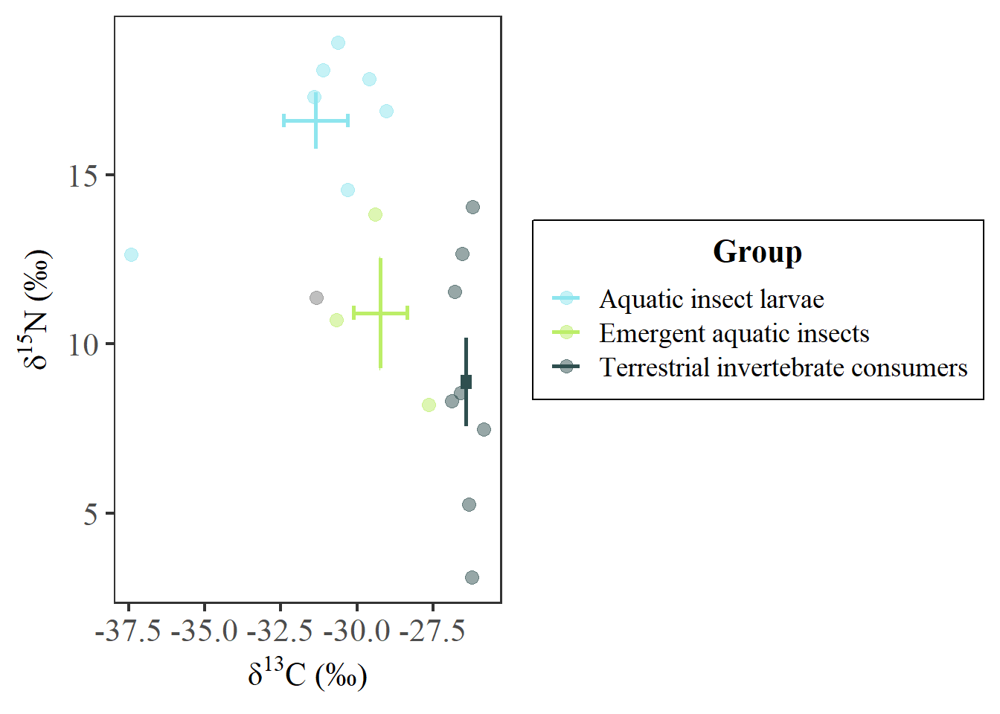
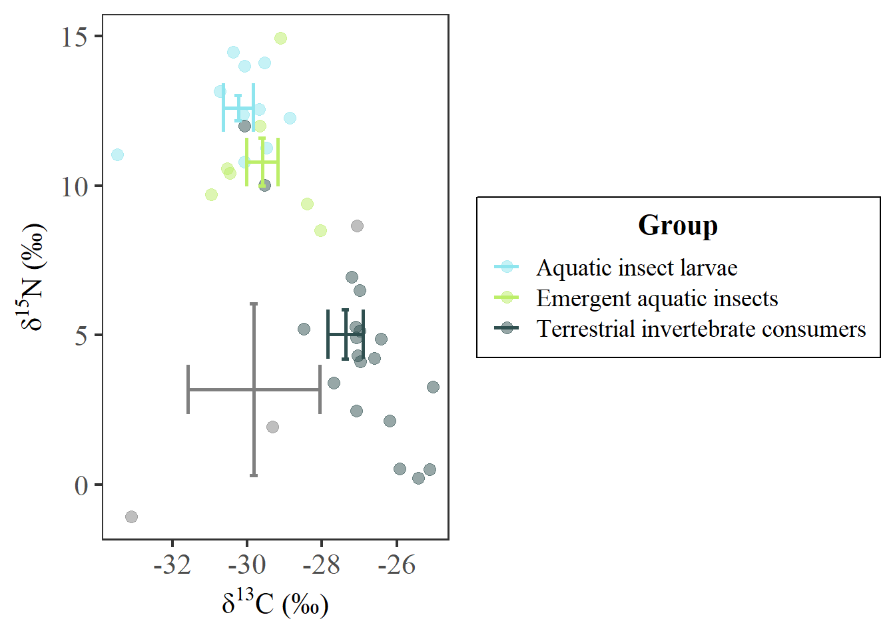

Warning: package 'ggplot2' was built under R version 4.3.3
── Attaching core tidyverse packages ──────────────────────── tidyverse 2.0.0 ──
✔ dplyr 1.1.4 ✔ readr 2.1.5
✔ forcats 1.0.0 ✔ stringr 1.5.1
✔ ggplot2 3.5.0 ✔ tibble 3.2.1
✔ lubridate 1.9.3 ✔ tidyr 1.3.1
✔ purrr 1.0.2
── Conflicts ────────────────────────────────────────── tidyverse_conflicts() ──
✖ dplyr::filter() masks stats::filter()
✖ dplyr::lag() masks stats::lag()
ℹ Use the conflicted package (<http://conflicted.r-lib.org/>) to force all conflicts to become errors
library(readxl)library(plotly)
Attaching package: 'plotly'
The following object is masked from 'package:ggplot2':
last_plot
The following object is masked from 'package:stats':
filter
The following object is masked from 'package:graphics':
layout
library(EnvStats)
Attaching package: 'EnvStats'
The following objects are masked from 'package:stats':
predict, predict.lm
library(ggExtra)library(ggforce)library(FSA)
## FSA v0.9.5. See citation('FSA') if used in publication.
## Run fishR() for related website and fishR('IFAR') for related book.
library(Hmisc)
Warning: package 'Hmisc' was built under R version 4.3.3
Attaching package: 'Hmisc'
The following object is masked from 'package:EnvStats':
stripChart
The following object is masked from 'package:plotly':
subplot
The following objects are masked from 'package:dplyr':
src, summarize
The following objects are masked from 'package:base':
format.pval, units
Warning in geom_errorbarh(data = kumla_isotopes_K1, aes(x = mean_d13C, y =
mean_d15N, : Ignoring unknown aesthetics: x
Warning: Removed 1 row containing missing values or values outside the scale range
(`geom_errorbarh()`).

#facet_wrap(.~ `Sampling site`, scales = "fixed") # mean and error bar not correctly mapped#Individual sites: KSkumla_isotopes %>%filter(`Sampling site`=="KS") %>%filter(`Full ID`!="K2 SW T1 trichoptera") %>%#remove trichoptera which had very low 13Cggplot() +geom_point(aes(x = delta13C, y = delta15N, color = Group), size =3, alpha =0.5) +# raw pointsscale_color_manual(name ="Group", values = matrix_color) +scale_x_continuous(name =expression(paste(delta^{13},"C (\u2030)"))) +scale_y_continuous(name =expression(paste(delta^{15},"N (\u2030)"))) +#geom_text_repel(aes(x = mean_d13C, y = mean_d15N, color = Matrix, label = Matrix),# point.padding = 0.85, size = 5, show.legend = FALSE, nudge_x = 0.5, nudge_y = 0.5) +geom_errorbar(data = kumla_isotopes_KS, aes(x = mean_d13C, y = mean_d15N, color = Group, ymin = lb_d15N, ymax = ub_d15N), size =1) +geom_errorbarh(data = kumla_isotopes_KS, aes(x = mean_d13C, y = mean_d15N, color = Group, xmin = lb_d13C, xmax = ub_d13C), size =1) +theme_bw(base_size =16, base_family="serif") +theme(axis.text=element_text(size =16),legend.title =element_text(face ="bold", size =16, hjust =0.5),legend.text =element_text(size =14),#legend.position= c(0.85, 0.25),legend.background =element_blank(),legend.box.background =element_rect(colour ="black"),panel.grid.major =element_blank(), panel.grid.minor =element_blank())
Warning in geom_errorbarh(data = kumla_isotopes_KS, aes(x = mean_d13C, y =
mean_d15N, : Ignoring unknown aesthetics: x

#facet_wrap(.~ `Sampling site`, scales = "fixed") # mean and error bar not correctly mappedkumla_isotopes %>%filter(`Sampling site`=="KS") %>%plot_ly(x =~delta13C, y =~delta15N, color =~Group) %>%add_markers(text =~`Full ID`)